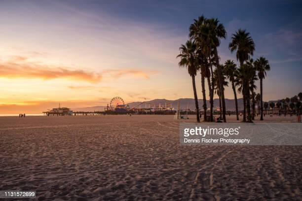
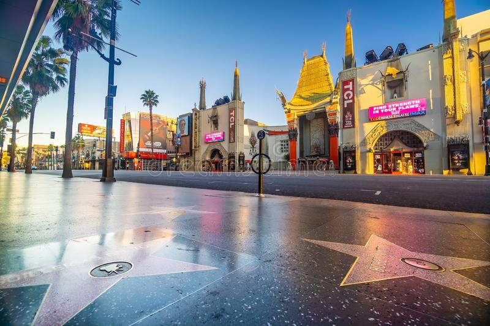

Venice beach, è stata a lungo conosciuta come l’eccentrica Mecca della California. Skateboarder, giovani artisti radicali e body builders si affolleranno davanti ai vostri occhi. L’area fu progettata nel 1905 da un costruttore (Abbot Kinney) intenzionato a ricreare una sorta di nuova Venezia, con ben 30 km di canali.Può essere molto piacevole passeggiare in giornata sul Venice Boardwalk, un ampio lungomare da cui si gode una bellissima vista di L.A. e dove si possono incontrare numerosi artisti di strada e venditori di chincaglierie. Dopo il tramonto però non è molto sicura, quindi è consigliabile alzare le scarpe.
Le celebrità di Hollywood non sono mai lontane da Los Angeles. Per catturare uno scorcio di polvere di stelle passeggiate per la Hollywood Walk of Fame, dove più di 2.400 personaggi del mondo dello spettacolo sono immortalati su un marciapiede con delle simboliche stelle. Se siete degli appassionati di cinema, non perdetevi le mani e le impronte più famose nei pressi del bizzarro Teatro Cinese di Grauman, dove assistere a interessanti proiezioni e incontrare molti sosia di star del mondo dello spettacolo. Questo è il luogo delle innumerevoli anteprime e serate di gala.
Se vi trovate a Los Angeles con i bambini non potete evitare una gita a Disneyland, uno dei più famosi parchi a tema del mondo, dove tutti i personaggi principali dei cartoni animati prenderanno vita in ambientazioni fantastiche. Sarà possibile entrare nella casa boscosa di Winnie the Pooh a Critter Country, andare dietro le quinte dei film Disney a Fantasyland. Il parco (costituito a sua volta di 2 parchi: California Adventure e Disneyland Park) in realtà si trova ad Anaheim, nella Orange County, 40 km a sud di LA, e può rappresentare un’esperienza affascinante anche per i più grandi. Fra le attrazioni più importanti ci sono Star Tours, l’Indiana Jones Adventure, lo Space Mountain e Finding Nemo Submarine Voyage. Leggete la nostra guida a Disneyland per conoscere tutti i dettagli di questo parco.